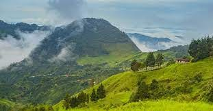

El cerro de Morrón es un inmenso terrón de arcilla y de rocas que se levanta gigantesco desde el abismo arrancando desde las profundidades del rio Pensilvania y dando paso por encima de su cuspide con forma de cono achatado, al sol naciente que ilumina foda la comarca. Está dos leguas de distancia de Pensilvania, con una dimensión de 800 metros de altura. Su corteza es con una flora y fauna abundantes. La parte oriental de sumasa son rocas apizarradas a 300 o mas metros de altura completamente escarpada (un farallón de corte tejante).
És un majestuoso cerro de leyendas y misterios, habiendo sido habitado por los indios Pantagoras ciento de años, quienes trazaron numerosos jeroglíficos, reliquias del paso aborigen, en sus piernas que se encuentran en la parte más elevada entre cuevas profundas; cuevas en donde hoy habitan diversidad de reptiles, alimañas y murciélagos. Se afirma que un grupo de indios Pantágoras, famosos por su espiritu de independencia e insubordinación, Luego de una cruenta batalla que le buscaron refugio en una de las cuevas donde, luego de encomendarse Am el dios de viento se suicidaron en masa. De este hecho, perdido en la bruma de los tiempos, surge la leyenda que había de ruidos extraños que se escuchaban en lo más profundo de las cavernas, y de es misteriosas que se desplazan en medio de la nocche, como vigilando un tesoro escondido en las trafes del Cerro de Morrón.
